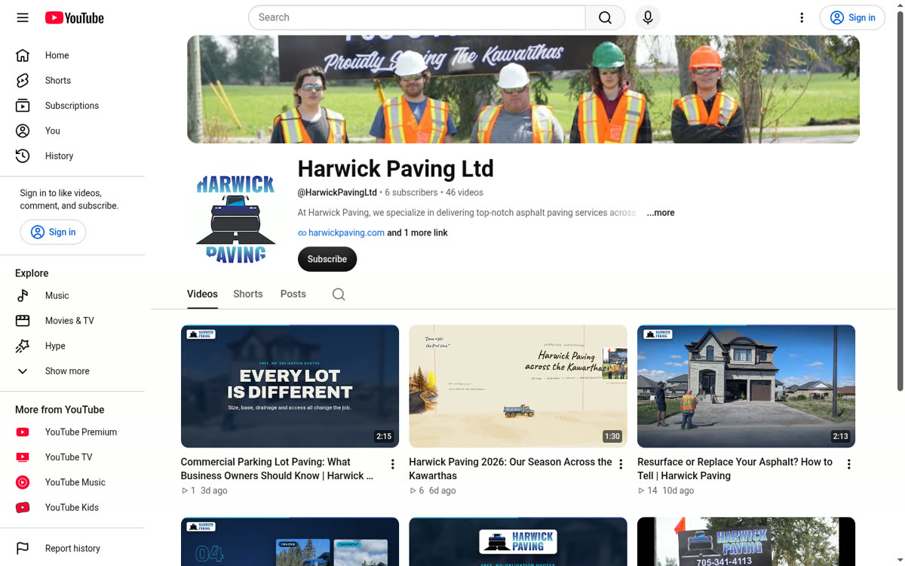
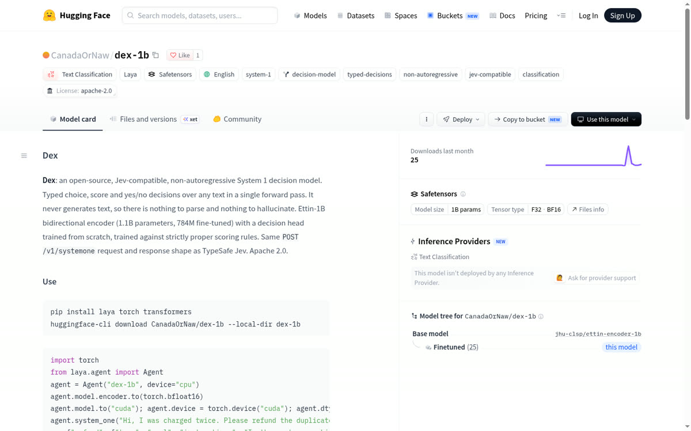
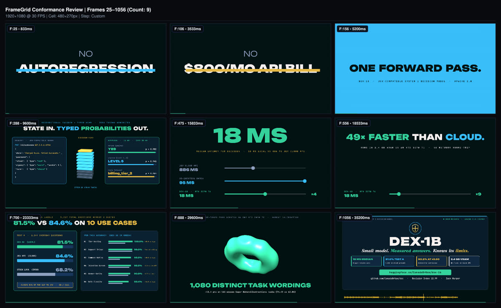
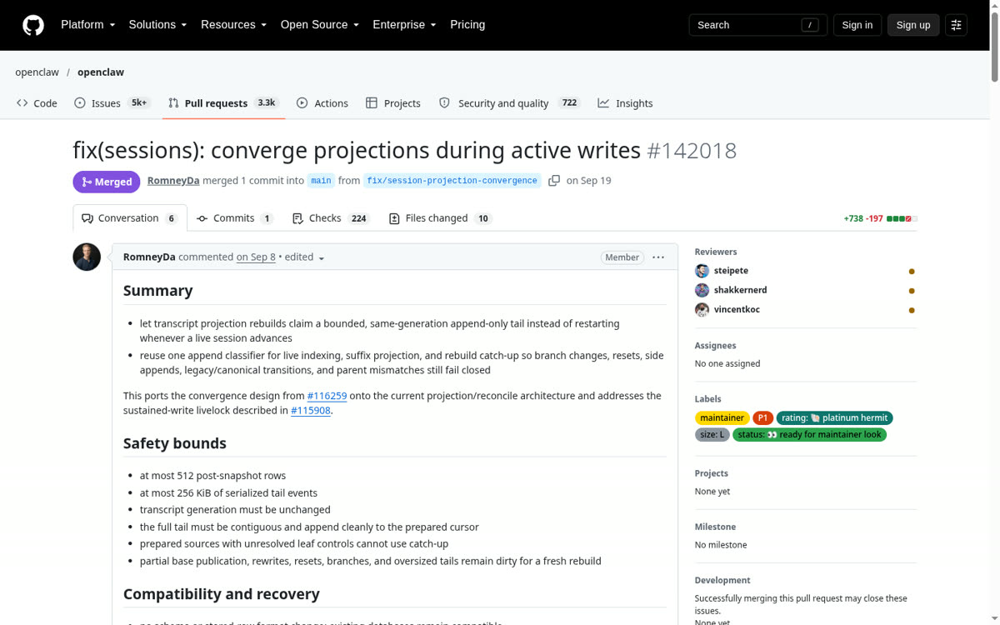
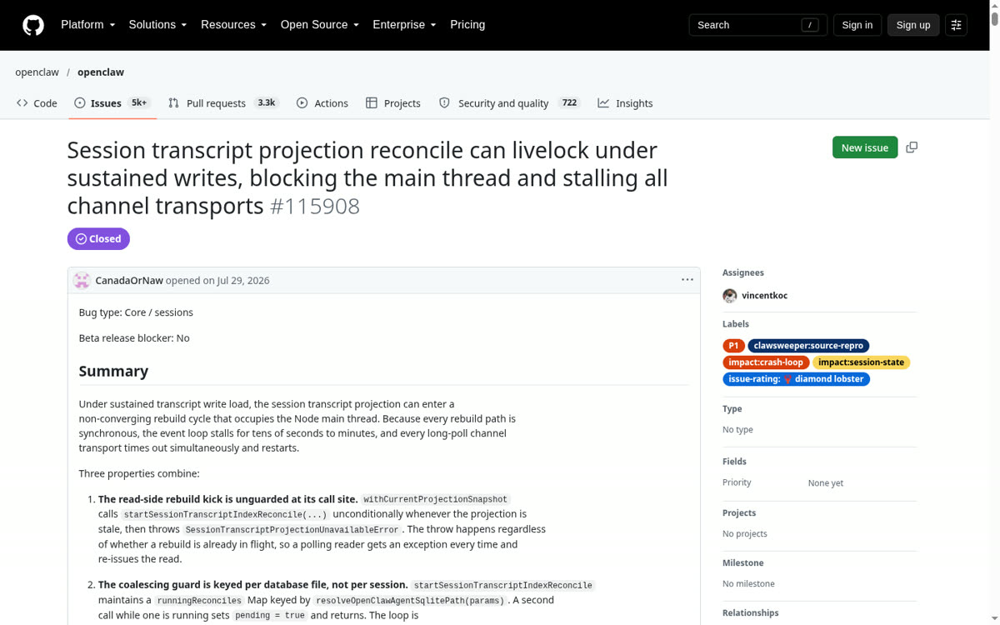
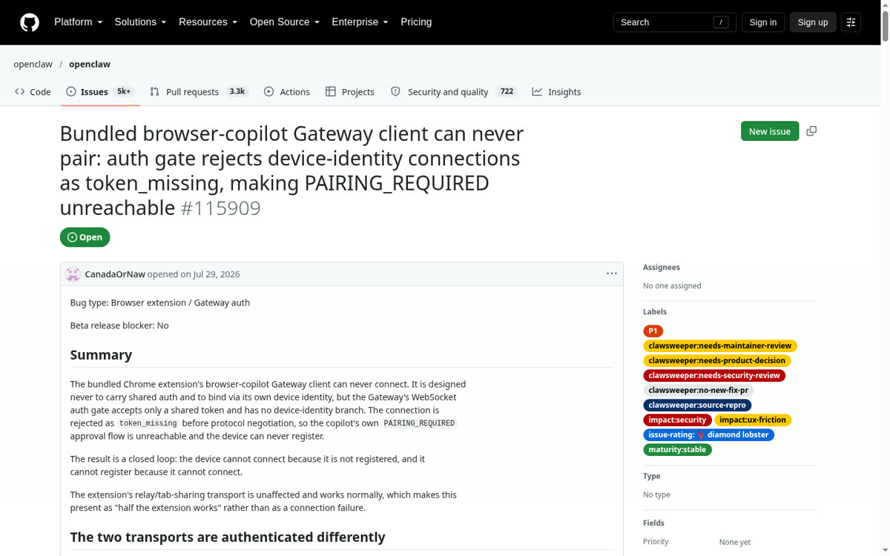
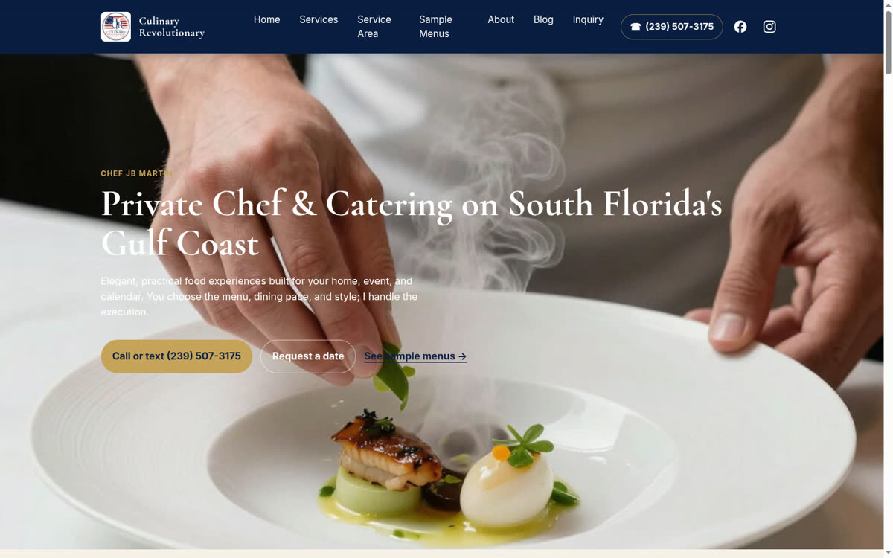
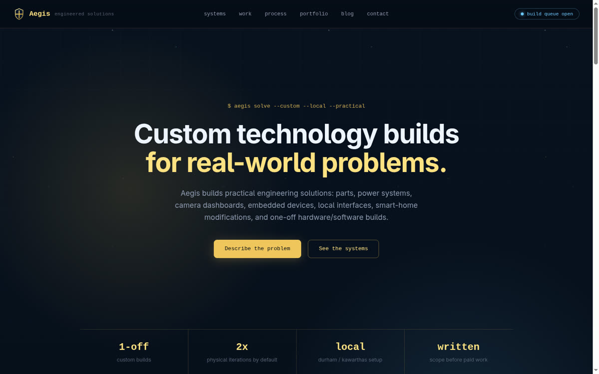
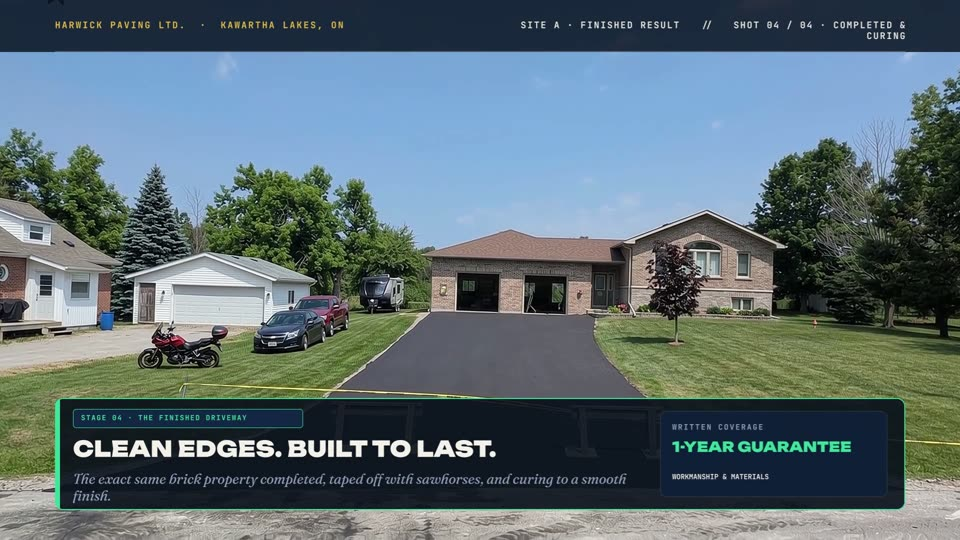
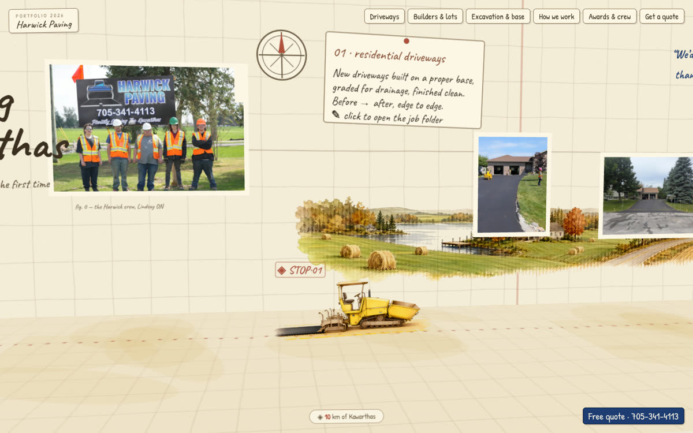

I operate heavy asphalt equipment in the field by day and engineer the autonomous AI agents, decision models, and local vision systems that run my businesses around the clock.
YouTube videos & daily Reels fact-checked against approved company facts before API scheduling
1.1B encoder + custom decision head trained on home RTX 3070 Ti; Apache-2.0 on Hugging Face
~390k-star agent project; 3× "diamond lobster" P1 & security issues
Asphalt paver, skid steer, steel/pneumatic rollers, crew direction

02

03


05

07
09
morning_brief.py reads disk/systemd state (atilla, harwick, aegis heartbeats, 24h job receipts, quota governor, money radar) & sends one Telegram brief.
FieldEn route to Kawartha Lakes job site; reading Telegram brief on phone.
Heavy equipment & site operations.
Aegis client web, SEO & CAD builds.
Harwick marketing & ops engine, second run.
Commercial video pipeline (Flow / Veo + Framefields WebGPU).
Echo Home: voice, LLM & 7-cam vision.
Available immediately for remote or Ontario (Durham Region / Kawartha Lakes / GTA) roles in AI Automation Engineering, Applied ML & Computer Vision, and Generative Media Production.
Practical marketing, fast websites, custom hardware builds, and heavy-equipment subcontracting for businesses in Durham Region and the Kawarthas.
Thanks, it's in my inbox.